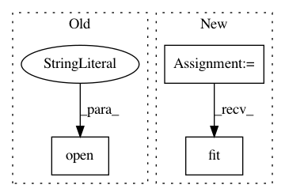

afef503d34919fb2febc0b475085f140e1a4e977,ann_architectures/cifar10/alexnet.py,,,#,24
Before Change
print("Test accuracy:", score[1])
filename = "{:2.2f}".format(score[1] * 100)
open(filename + ".json", "w").write(model.to_json())
model.save_weights(filename + ".h5", overwrite=True)
After Change
// Whether to apply global contrast normalization and ZCA whitening
gcn = True
zca = True
traingen = ImageDataGenerator(rescale=1./255, featurewise_center=gcn,
featurewise_std_normalization=gcn,
zca_whitening=zca, horizontal_flip=True,
rotation_range=10, width_shift_range=0.1,
height_shift_range=0.1)
// Compute quantities required for featurewise normalization
// (std, mean, and principal components if ZCA whitening is applied)
traingen.fit(X_train/255.)
trainflow = traingen.flow(X_train, Y_train, batch_size=batch_size)
testgen = ImageDataGenerator(rescale=1./255, featurewise_center=gcn,
In pattern: SUPERPATTERN
Frequency: 3
Non-data size: 3
Instances
Project Name: NeuromorphicProcessorProject/snn_toolbox
Commit Name: afef503d34919fb2febc0b475085f140e1a4e977
Time: 2016-08-31
Author: bodo.rueckauer@gmail.com
File Name: ann_architectures/cifar10/alexnet.py
Class Name:
Method Name:
Project Name: biolab/orange3
Commit Name: 887ee40cf11e939de737903a1d867eb41f49acb4
Time: 2014-12-04
Author: martin.strazar@gmail.com
File Name: Orange/widgets/classify/owclassificationtreegraph.py
Class Name:
Method Name:
Project Name: NeuromorphicProcessorProject/snn_toolbox
Commit Name: afef503d34919fb2febc0b475085f140e1a4e977
Time: 2016-08-31
Author: bodo.rueckauer@gmail.com
File Name: ann_architectures/cifar10/cnn.py
Class Name:
Method Name: